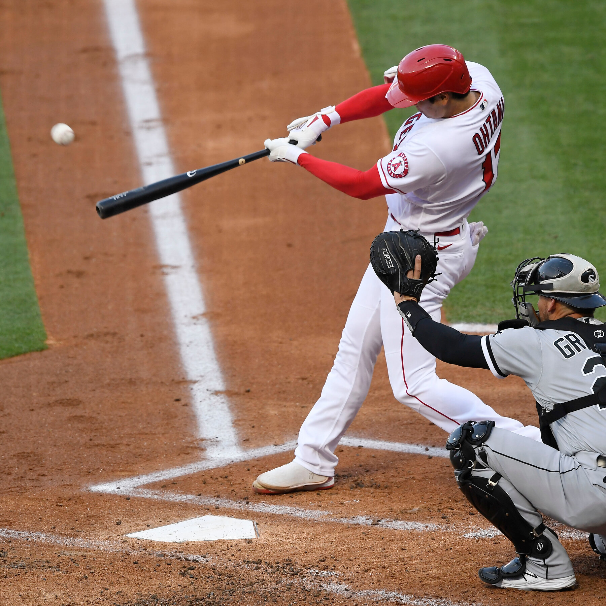
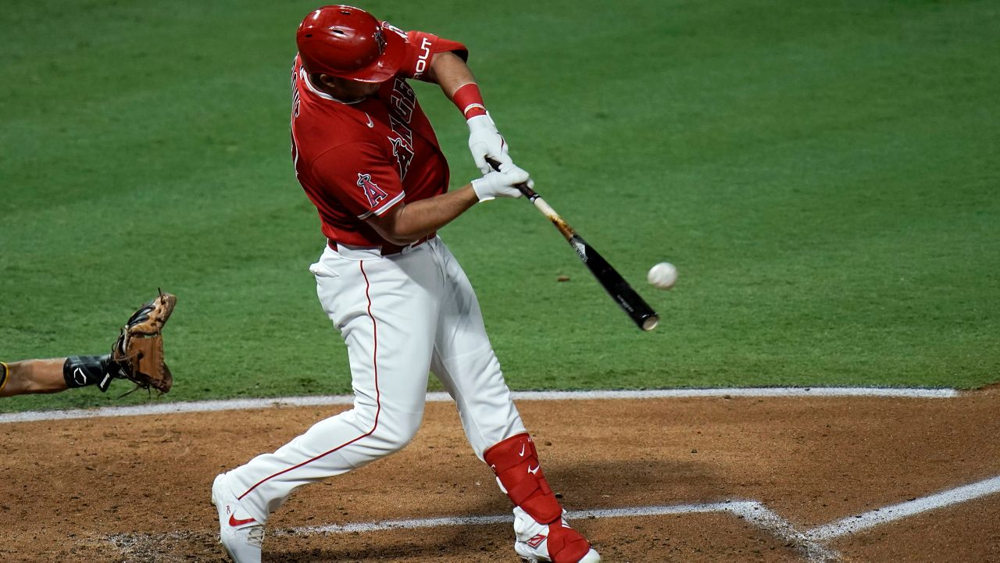
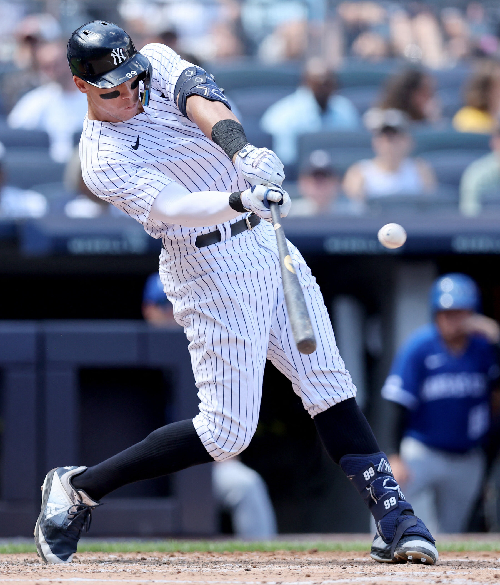

Home
Baseball
We love Dingers here on this page.
Best Baseball Players
Shohei Ohtani
Mike Trout
Aaron Judge
  
Home Runs Hit 2022
Furthest Home Runs Hit
CJ Cron 504 ft
Christian Yelich 499 ft
Jesus Sanchez 496 ft
Back to
Top